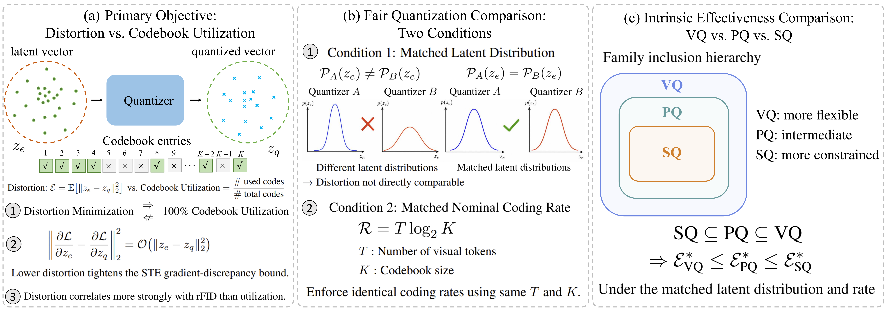
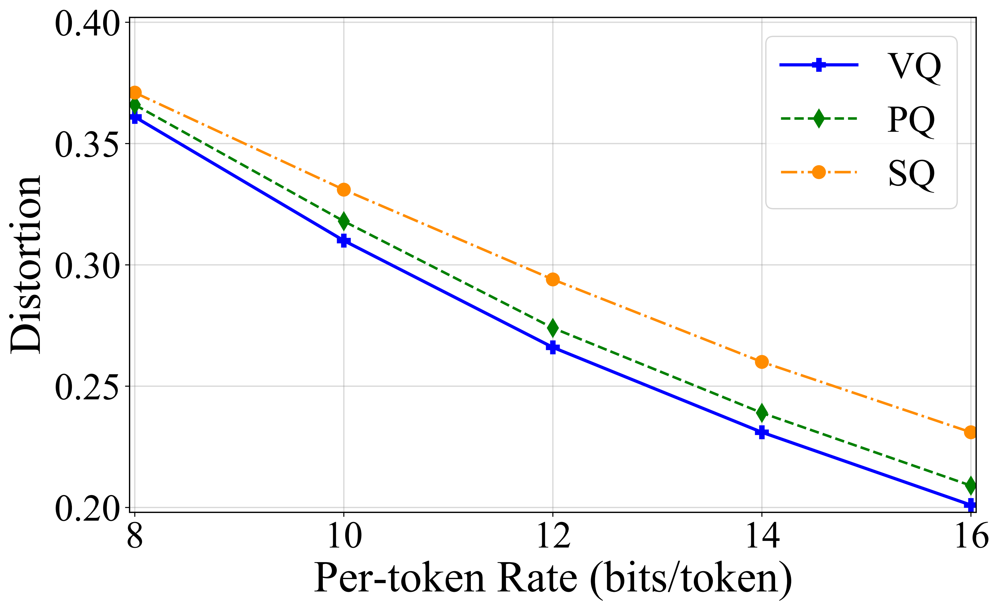

R = T log2 K
T is the token count and K is the discrete code-space cardinality.
on Vector, Product, and Scalar Quantization
1University of Toronto 2Boston College 3Vijil
In our paper, we show that distortion is the primary objective, fair comparison requires matched latent distributions and rates, and modern VQ methods reach the lowest distortion under these controls.
Discrete visual tokenizers compress continuous latent features into a finite set of symbols. Rate measures the representation budget. Distortion measures the information lost.
T is the token count and K is the discrete code-space cardinality.
Expected squared error measures the information removed by quantization.
This lens resolves three linked questions: what to optimize, how to compare quantizers, and which family has the strongest intrinsic rate–distortion behavior.

The three conclusions form one framework: optimize the quantity that measures information loss, control the factors that change it, then compare quantizer families at the same operating point.
Under mild conditions, every global distortion minimizer uses the full codebook. The converse fails: full utilization alone does not guarantee minimum distortion.
Latent scale changes squared distortion by a2. Token count and code-space size set the rate. Both must be matched to isolate the quantizer.
VQ quantizes vectors jointly. PQ factorizes them into blocks. SQ factorizes every coordinate. Each constraint narrows the set of possible solutions.
Distortion minimization is the fundamental criterion for intrinsic quantization effectiveness under a fixed rate.
VQ searches over arbitrary vector codebooks. PQ restricts each codeword to a Cartesian product of subcodebooks, while SQ applies that restriction coordinate by coordinate. The feasible sets are therefore nested.
When the source lies near a low-dimensional structure, VQ can adapt to its intrinsic dimension. Its distortion can scale as O(K−2/deff), while fixed PQ and SQ factorizations may remain tied to the ambient dimension.
We compare matched-rate quantizers across three latent-space datasets and a controlled CelebA-HQ pixel-space setting.
Each metric reports the best result within a quantizer family. Latent-space rFID is measured after decoder adaptation; pixel-space models use single-stage training.
The family-level comparison stays consistent as the per-token coding budget changes.

More rate lowers distortion for every family, yet the ordering persists at every evaluated point: VQ achieves the lowest distortion, followed by PQ and SQ.
Distortion tracks reconstruction fidelity far more closely than codebook utilization across representation spaces and datasets.
@article{Fang2026ratedistortion,
title = {A Unified Rate--Distortion Perspective on Vector,
Product, and Scalar Quantization},
author = {Fang, Xianghong and Mou, Wenlong and Yuan, Yuan and
Kong, Dehan and Rudner, Tim G. J.},
journal = {arXiv},
year = {2026}
}